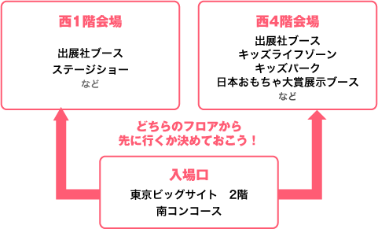

トップ ＞ 一般公開 ＞ 一般公開ご来場の皆様へ
-
会場周辺の駐車場は、例年混雑しますので、やむを得ない場合を除き公共交通機関をご利用ください。
→ ビッグサイト駐車場のご案内
-
お客様の安全のため、混雑時にはベビーカーを折りたたんでいただく場合がございます。特に、エスカレーターご利用の際には必ず折りたたんでいただきます。ご理解、ご協力のほどお願いいたします。また、アトリウム特設ステージ観覧スペースにはベビーカーをお持込みいただけません。アトリウム横の「ベビーカー一時置場」をご利用ください。
※ベビーカー一時置場での盗難・紛失に対する責任は負いかねます。貴重品はお手元にお持ちください。
-
貴重品の管理は充分ご注意ください。会場内での盗難、置き引き等は、主催者及び会場側では一切責任を負いかねます。
-
出展社のブースでは、おもちゃの販売（物販）を行っている場合があります。販売される商品についての詳細や、お買い求めになられた商品に対するお問合わせは、各出展社に直接お寄せください。
※おもちゃショー事務局では、出展社の物販に関するお答えはできませんので、ご了承ください。
-
ペットを連れてのご入場の場合は、完全にケージに入れた状態でご入場ください。首が出る専用バック等はご遠慮ください。
※ 盲導犬/介助犬は除きます。
※ 他のお客様の安全の為、状況によってはペット連れでのご入場をお断りさせていただく場合もございます。
-
入場前に屋外で待っていただく場合もございます。また会場内も大変混雑し気温が高くなることが予想されますので暑さ対策、水分補給などにご注意ください（雨天時には雨具等をご用意ください）。
-

混雑時は、お客様の安全のため、一時的に入場をお待ちいただくか、ご入場をお断りさせていただく場合もございますので、予めご了承ください。また、前日及び深夜からのご来場はご遠慮ください。
-
・会場内では、館内放送によるお連れ様の呼び出しはできません。
※お越しの際は、予め待ち合わせ場所を決めてお楽しみください。
・会場にてお貸出しできる車いすを２台ご用意しております（他の方がご使用中の場合はご容赦ください）。
・ベビールーム（授乳室・おむつ替えスペース）を会場のトイレ内及びキッズパーク等に設置しています。詳しくはホールマップでご確認いただくか、近くのスタッフまでお声がけください。
・気分が悪くなったりケガをした場合は、お早めにお近くのスタッフまでお申し出いただくか、救護室までお越しください。
・喫煙所をのぞき、会場内はすべて禁煙です。
・会場内では取材撮影および事務局による記録撮影が行われ、来場者の姿がテレビ・新聞・雑誌・WEB等に掲載されることがあります。
・その他、会場内では係員の指示に従っていただきますようお願いします。
-
会場までのアクセスは、こちらをご覧ください。
電車の乗り継ぎを調べたい方はこちらから！（Yahoo!路線情報へ）
-
おもちゃショーの会場は、ビッグサイトの西棟、1階と4階に分かれています。
遊びに行きたい出展社ブースが何階のどの辺にあるか、またどんなイベントがあるのかなどを事前に調べてご来場いただくと、よりおもちゃショーを楽しめます。

情報はここでチェック！
各出展社ブースの場所
イベントの内容
ステージショー
キッズパーク